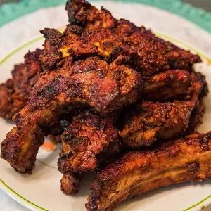

Spicy Korean ribs

Best Korean Ribs in town
These spicy Korean ribs are a family favorite recipe, picked it from the local paper.
Best if left in the fridge overnight, the flavors are a lot stronger.
Ingredients:
- 4 racks baby back pork ribs
- salt and ground black pepper
- 1 small onion
- 1 cup kochujang
- white vinigar
- 2 tablespoons soy sauce
- 1 bottle pilsner-style lager
Steps
- Remove membrane from back of ribs or score with a sharp knife. Place ribs in a shallow dish and season with salt and pepper.
- Puree onion in a blender or food processor. Add kochujang, vinegar, garlic, sesame oil, soy sauce, and minced ginger; puree into a sauce. Rub 1/3 generously over ribs, reserving the rest of the sauce. Cover ribs with plastic wrap and refrigerate 5 hours to overnight.
- Preheat the oven to 325 degrees F (165 degrees C).
- Scatter sliced ginger root over the bottom of a roasting pan. Place ribs meat-side down on top of ginger slices and pour lager over ribs. Cover with a lid or aluminum foil.
- Bake in the preheated oven until meat is loosened from the ribs but not yet falling off the bone, 2 to 2 1/2 hours. Let cool, 5 to 10 minutes.
- Preheat an outdoor grill to 400 degrees F (200 degrees C) and lightly oil the grate. Place ribs on the grill and cook until browned, about 6 minutes per side. Coat with 1/2 the reserved sauce during the last 2 minutes of cooking each side. Garnish with white and black sesame seeds.